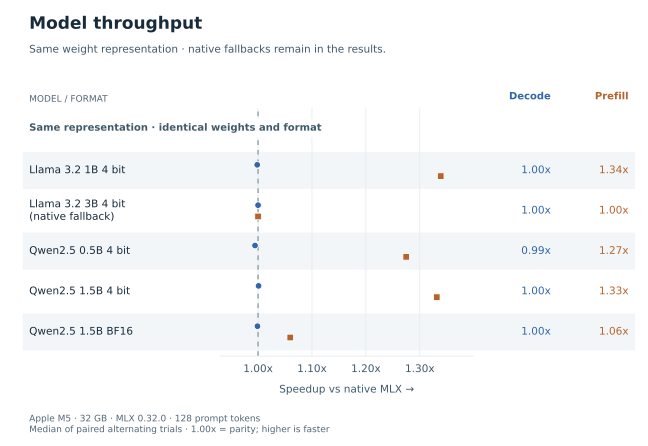
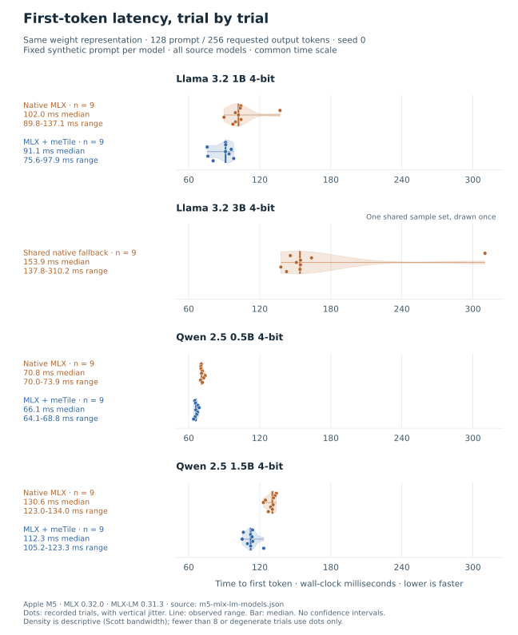
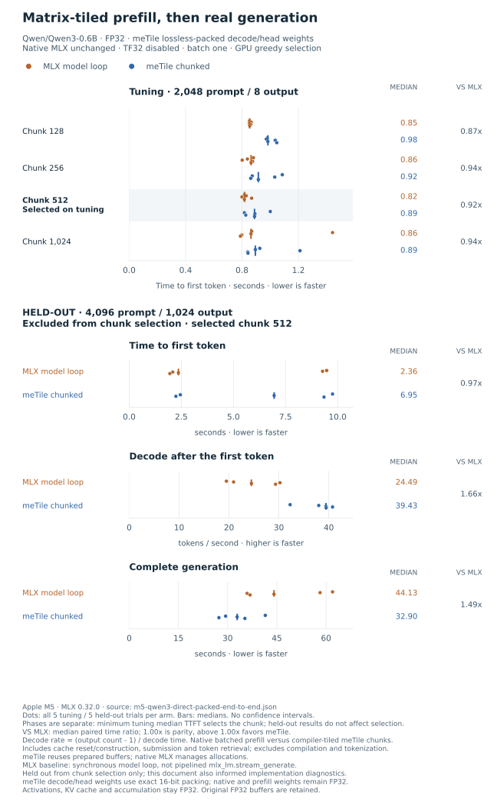
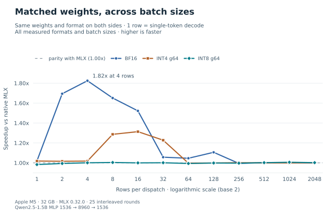
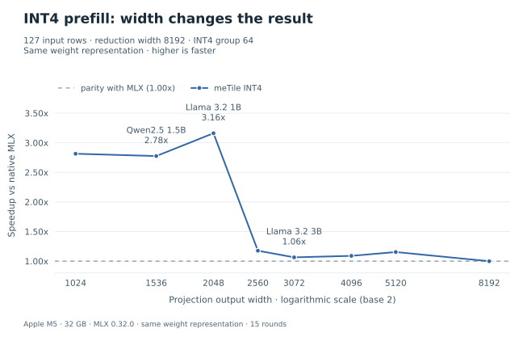

Benchmarks¶
These results compare meTile with native MLX on an Apple M5 with 32 GB memory and MLX 0.32.0. Start with the workload you care about: model generation, a layer at a particular shape, or an individual compiler change.
Reading the charts: higher speedup is better; 1.00x means parity.
Speedup is baseline latency divided by meTile latency, or meTile throughput
divided by baseline throughput. Weight formats match unless a comparison is
explicitly labeled compression-assisted or lossless packed storage. Click any
figure for the full-size SVG.
Model inference¶
The four 4-bit models use 128 prompt tokens and request 256 output tokens. The dense BF16 Qwen 2.5 1.5B result uses 128 prompt tokens and requests 64 output tokens. Each active comparison has nine alternating trials per backend; the native fallback reuses a single nine-trial series. Reported speedups are medians of paired trials.
Matched-weight decode is close to parity; several models have faster prefill. A result marked native fallback uses native MLX, not a generated kernel.


Trial-to-trial latency¶
The violin plots show time to first token, in milliseconds, for the four 4-bit models above. Each dot is one recorded trial; the median summarizes the nine samples. The outline shows a smoothed distribution, not a confidence interval. Each panel is a separate model, with one fixed synthetic prompt. The shared native fallback is drawn once rather than presented as two independent measurements.


The latency summary also shows time-to-first-token and end-to-end speedup for all five matched-weight results. See Benchmark methodology for the source reports and timing definitions.

Compression-assisted inference¶
The separate BF16 capacity suite uses affine-INT8 decode projections against native BF16 weights: 128 prompt tokens, 128 requested output tokens, seven trials per backend. These gains include compression, so they are not same-precision kernel speedups. Multi-row prefill keeps the original weight representation.
View the separate comparison groups. Fidelity checks apply to the measured calibration workload, not every prompt or downstream task; MLX-LM Backend explains selection and fallback behavior.

Megakernels¶
The Qwen3-0.6B experiment measures 4,096 prompt tokens and exactly 1,024 output tokens with matrix-tiled attention and projections written in the DSL. Request batch size is one; chunks batch token rows, not independent requests. Chunk size 512 is selected on a separate 2,048-token document with eight outputs. All four tuning sizes and the complete generation pass the logit, K/V-cache and greedy-token checks. Native MLX uses FP32 weights with TF32 off. meTile reconstructs the same FP32 weight values from lossless packed storage in decode projections and the vocabulary head; this is not the same physical weight representation. Prefill matrix weights, activations, KV cache and accumulation remain FP32. Original FP32 buffers are retained, so the packed copy does not establish a total-memory saving.
Complete generation is faster in this run; there is no prefill win. meTile’s median time to first token is 6.95 s versus MLX’s 2.36 s. Complete generation is 32.90 s versus 44.13 s; post-first-token decode is 39.43 versus 24.49 tokens/s. Median paired speedups are 0.971x for TTFT, 1.655x for decode and 1.494x overall. These are medians of paired ratios, not ratios of the displayed medians.


The chart retains every trial without outlier exclusion. meTile wins all five
complete-generation pairs, but only two TTFT pairs. Total latency spans
35.94–61.97 s for MLX and 27.34–41.47 s for meTile. TTFT ranges from
1.95–9.47 s and 2.24–9.76 s, respectively. The paired 0.971x
does not establish prefill parity: the five observations vary widely and the
candidate’s median TTFT is higher. This is one noisy session and one document,
not a general model-speed guarantee. The document was held out from
chunk selection only, not implementation diagnostics. The baseline is an
unmodified MLX model in a synchronous greedy loop, not pipelined
mlx_lm.stream_generate. See the raw report,
benchmark source
and methodology for the exact comparison.
The earlier shared-storage, unpacked-weight report and
chart remain unchanged. They recorded
1.108x median paired complete-generation speedup in a different session.
That is not a paired ablation of direct memory or weight packing.

The earlier scalar-attention backend recorded 5.78 s median TTFT against 1.99 s for MLX. Its chart remains available. That was a separate session and compiler configuration, not a paired ablation of the new attention kernel.

Other results remain in Megakernels. The original single-threadgroup design takes 419–438 ms per forward versus 22–26 ms for native MLX. The earlier GPU-wide design uses sequential prefill with 8 or 32 prompt tokens and 8 or 16 output tokens, including GPU greedy selection. Its FP32 decode is near parity at 38.6–41.4 tokens/s, versus native MLX’s 38.5–40.7 tokens/s, but total generation is slower. Those FP32 logits, valid cache entries and generated IDs pass validation; FP16 fails cache checks and has no published timings. These are Qwen3-0.6B results, not the hybrid Qwen3.6 architecture.
Layer shapes¶
Batch size¶
This sweep measures a SwiGLU MLP with a residual add, not a complete model:
X, residual: [B, 1536]
gate, up: [8960, 1536]
down: [1536, 8960]
Y = (silu(X @ gate.T) * (X @ up.T)) @ down.T + residual
B sweeps powers of two from 1 to 2048. The BF16 series uses BF16
weights and activations. INT4 and INT8 use affine weights with group size
64 and FP16 activations. Each point is the median speedup from 25 paired
rounds, with identical weights and formats on both sides of that comparison.


Projection width¶
This is an INT4 affine matrix multiply, with group size 64 and FP16
activations: [127, 8192] @ [N, 8192].T -> [127, N]. The eight plotted
widths span 1024 to 8192. Each ratio divides the two backend median
latencies from 15 paired rounds.


The speedup drops between widths 2048 and 2560 for this workload; it is not a universal hardware threshold. These two sweeps save only summary timings, so they use line charts: there are no saved trial distributions to plot as violins.
For other views, see the nine model-shaped layer workloads and the effective weight-bandwidth sweep. Neither is a full-model benchmark; effective bandwidth is weight bytes divided by latency, not measured DRAM traffic.


Compiler results¶
These microbenchmarks compare separate compiler changes. The baseline and timing boundary matter as much as the ratio; the gains cannot be multiplied.
Workload |
Baseline and metric |
Result |
|---|---|---|
FP16 GEMM, square sizes 256 and 1024 |
Native MLX, synchronized wall time |
About 1.08x and 0.95x. The separate prior-compiler GPU comparison gives 6.61x and 5.17x. |
Strict-FP32 epilogue fusion, sizes 64, 256 and 1024 |
Compiled MLX, synchronized wall time |
About 1.03x–1.08x across two runs, with |
Ownership transpose, 16 cases |
MLX, synchronized wall time |
Geometric mean 0.985x; no demonstrated speed win. Outputs are bitwise checked. |
Verified software staging, eight FP16/FP32 cases |
Previous software pipeline, GPU and wall time |
GPU 0.960x–1.017x; wall 0.974x–1.002x. Includes ragged shapes. |
RMSNorm register tiling remains opt-in. The FP16/FP32 test covers widths 1009 and 1024 with batches 1, 32 and 256. Against the prior static-width register4 kernel, both heldout runs miss the required 1.10x GPU speedup on the aligned 32-row and 256-row cases; the default is unchanged.
The matched FP32-compute MLX graph comparison spans 0.992x–1.144x in wall
time. Against mx.fast.rms_norm, the range is 0.980x–1.021x, with a
geometric mean below one in both runs. This is not a broad fast-MLX win.
The full RMSNorm chart keeps
all cases, including losses and both heldout runs.

Methodology and reproduction¶
Benchmark methodology describes the timing boundaries, numerical policies, source artifacts, and commands for reproducing the figures or running new measurements. Rendering a chart does not run a benchmark or create new evidence.